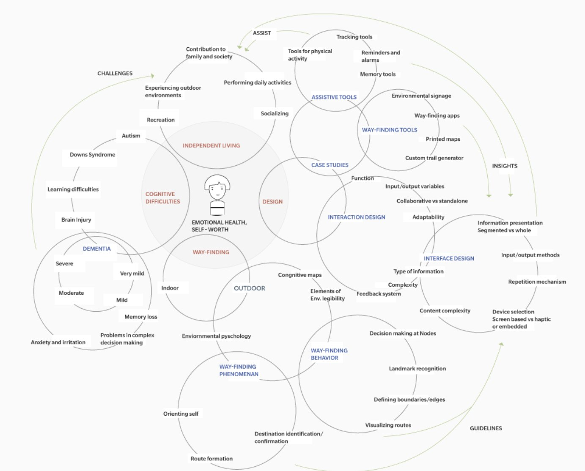

i.
narrowing the scope
We mapped the field first: kinds of cognitive difficulty, independent living, wayfinding behaviour and interaction design. We started with two groups, people with traumatic brain injury and people with dementia, and narrowed to mild to moderate dementia. Of four contexts for wayfinding, we chose walking in one’s own neighbourhood, because people with dementia eventually give up driving.
